Hackerspace MMU
We're a bunch of problem solvers building things together. Not (necessarily) hacking into things. We support each other’s learning and learn from what others share!


We're a bunch of problem solvers building things together. Not (necessarily) hacking into things. We support each other’s learning and learn from what others share!
Declare a project → Build it → Learn as you go
Anything from a first PHP website to your own React
drag-and-drop library.
Chat about the latest in tech.
You can be sure someone will admire your custom mechanical
keyboard or your VIM terminal setup.
The hype when you need it. Some ideas when you're stuck.
Someone to spot the missing semicolon.
With love <3
Your degree gives you the foundation, but building is where you put it into practice.
When you graduate, interviewers won't just ask what you've learned. They'll ask what you've built. Knowing PHP is one thing. Building with Laravel is another. Knowing Java is one thing. Building an app is another.
Don't just learn to code. Build.

73 Active Members
5574 DAYS ACTIVE
539 MEETUPS
2179 UPDATES
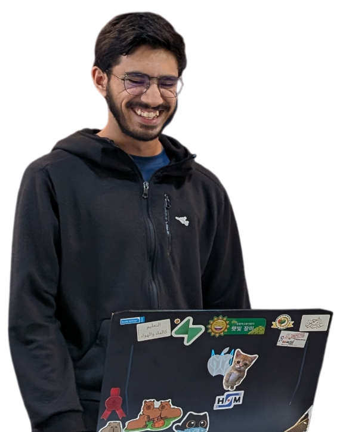

67 Hackathons
Hackathons, weekly meetups, mamak runs and plenty of late nights. Here's every year of Hackerspace MMU so far.
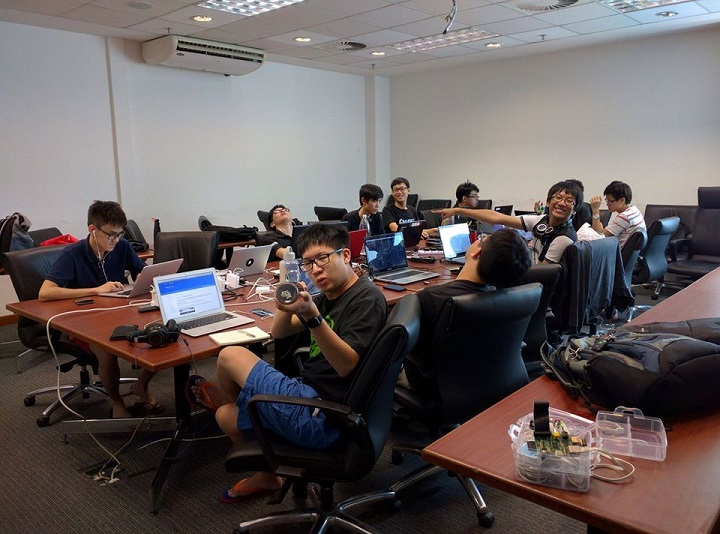
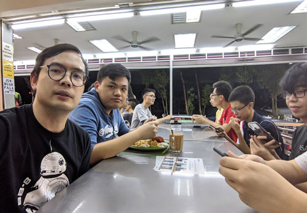
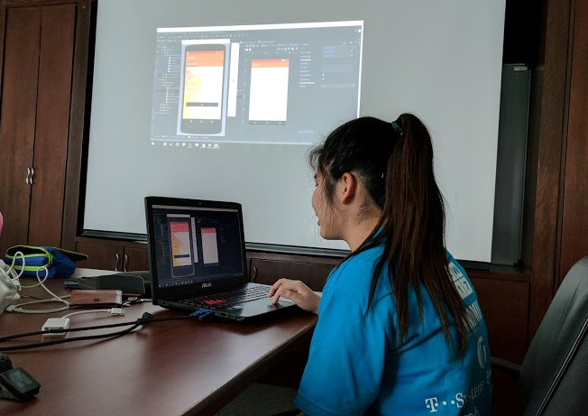
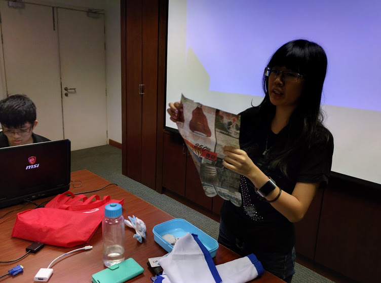
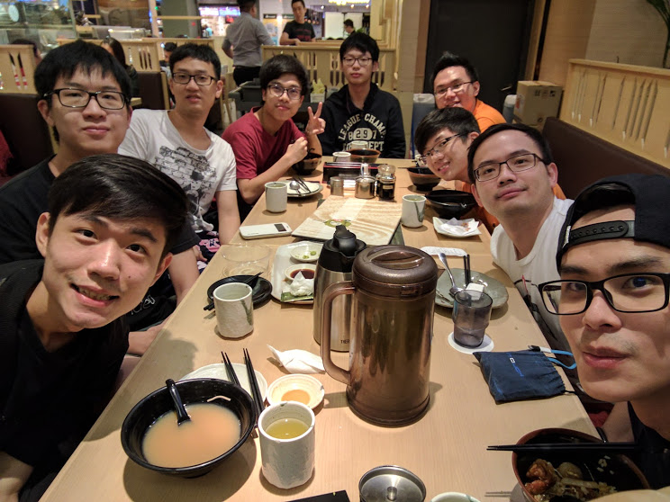
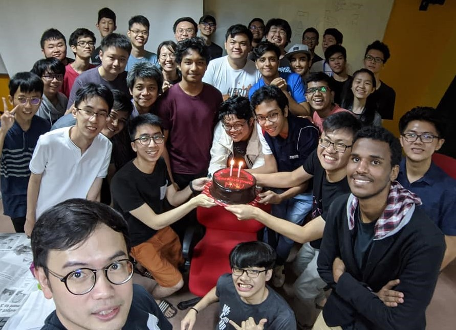
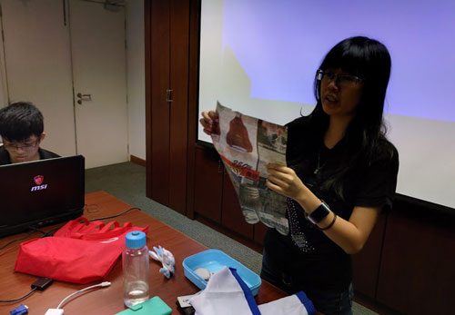
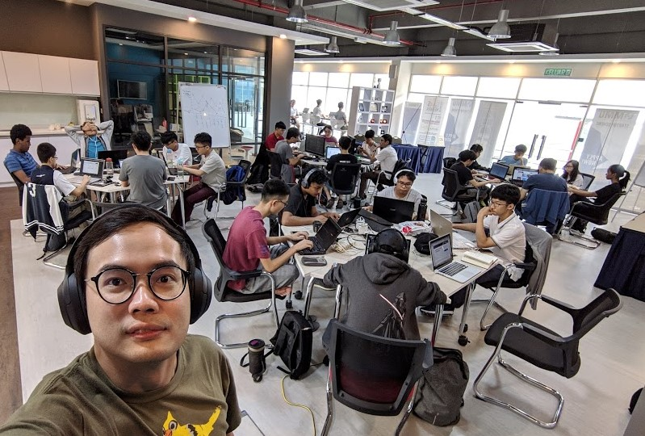
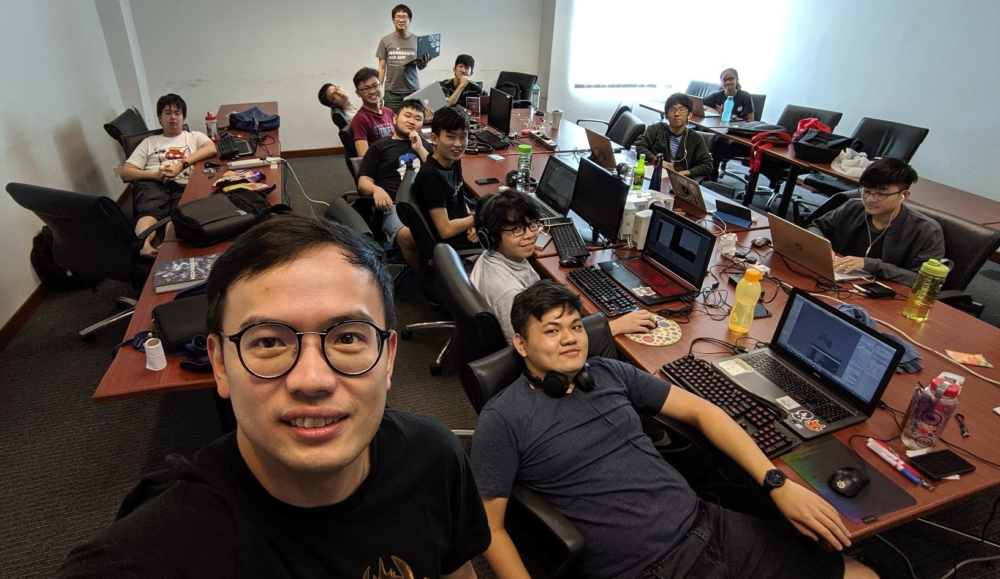
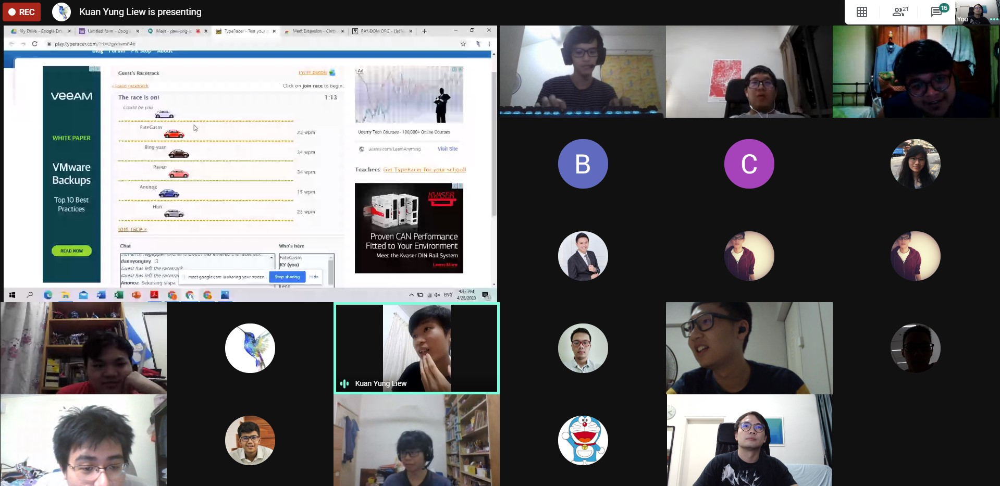
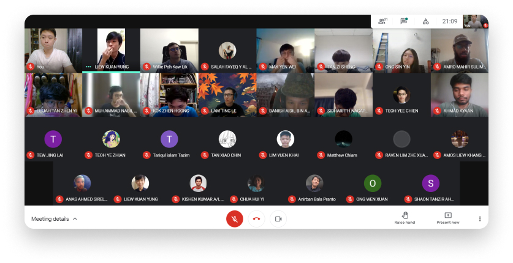

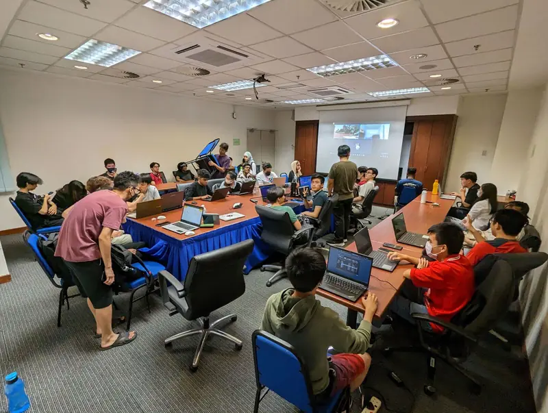
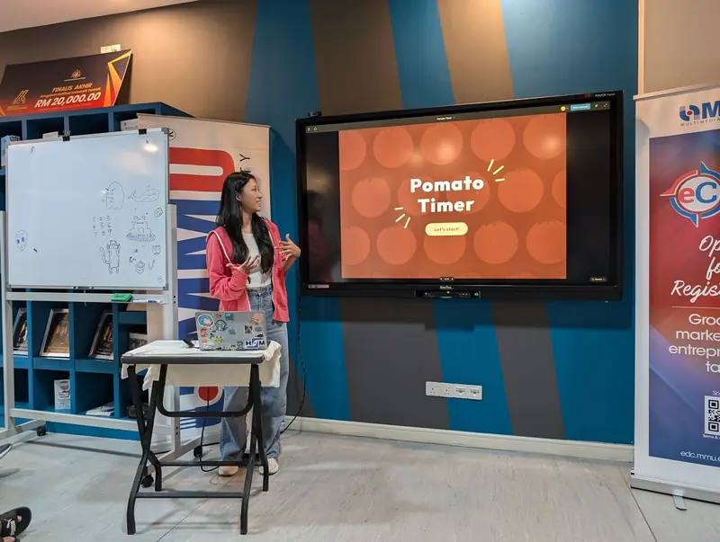
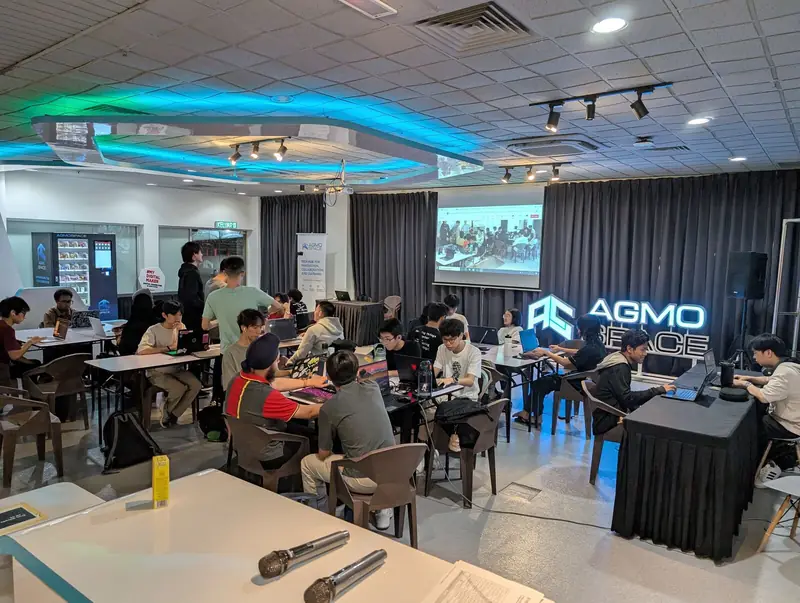
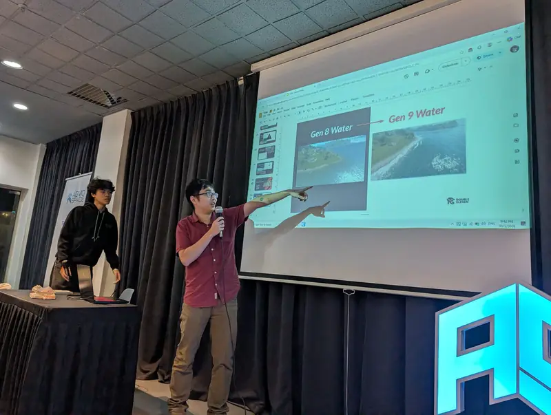
“I hear and I forget. I see and I remember. I do and I understand.”
A weekly meetup, a hackathon every trimester, and a few traditions picked up along the way.
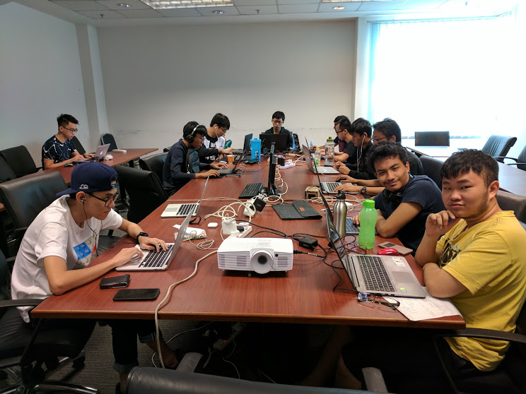
Every Tuesday8.00pm - 10.00pm
Bring your laptop and whatever you’re working on. Share progress, get unstuck and catch up on tech news.
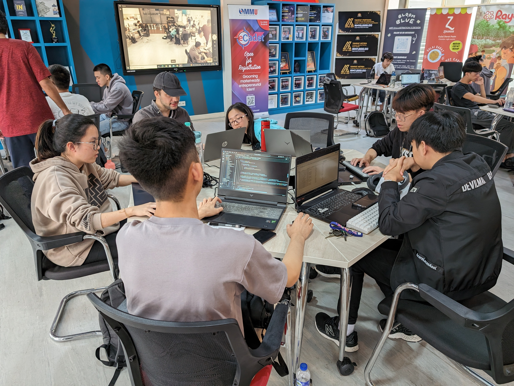
Every trimester9.00am - 10.00pm
One long day of building something from scratch. Start with an idea in the morning, demo it by night.
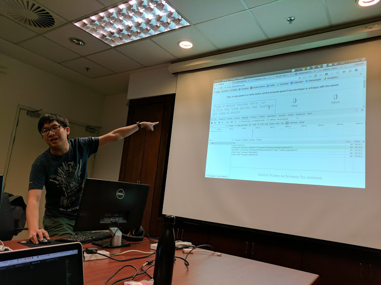
Show the room what you’ve built since your last update. Wins, bugs and all.
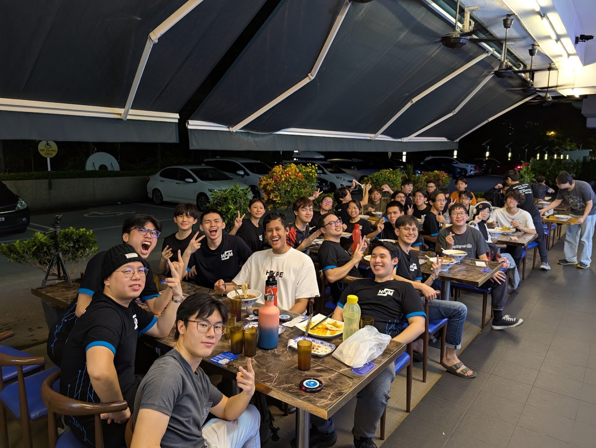
When the meetup wraps up, the conversation carries on over teh tarik at the mamak.
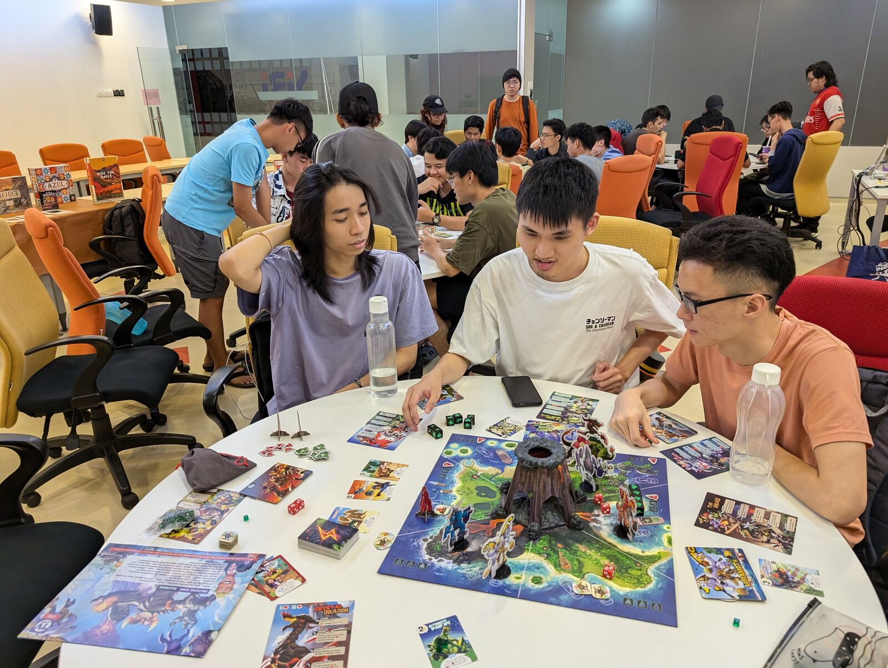
When study week hits, we trade keyboards for dice and board games to take a break before the finals.
Open to every MMU student and staff member. Enter your MMU email and we’ll take you to the sign-up form.